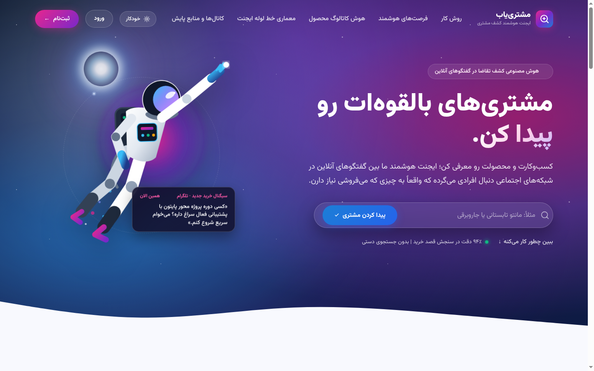
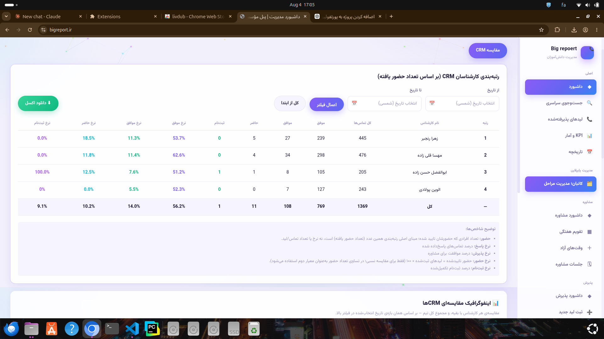
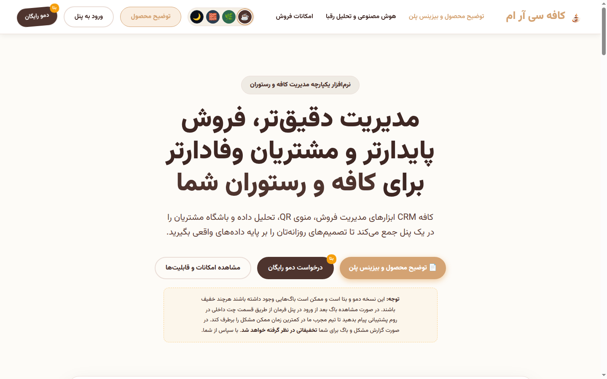
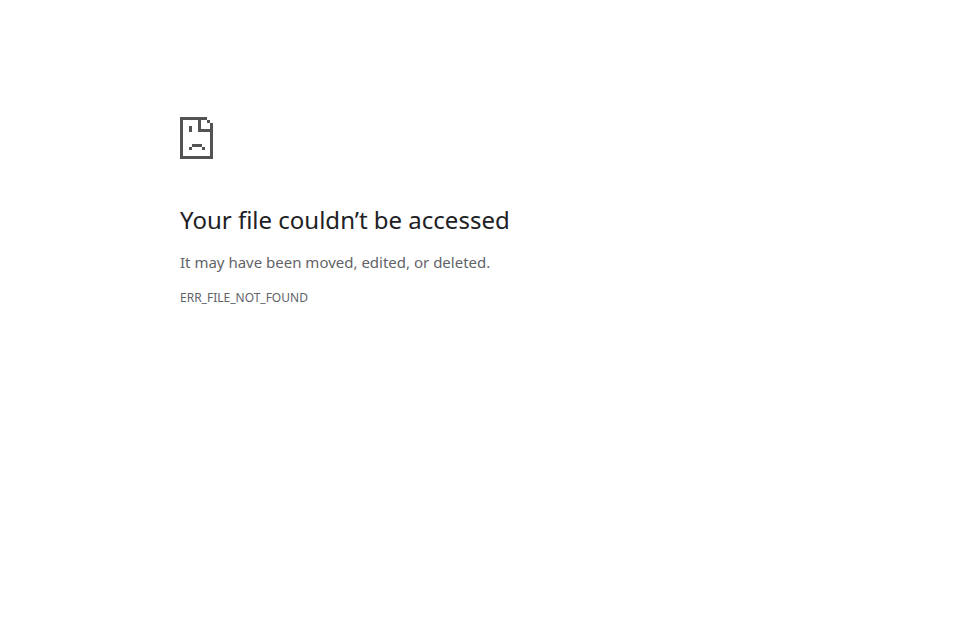

پروژههای فروشگاهی، شرکتی و سیستمهای اختصاصی ساختهشده برای کارفرمایان واقعی.
مجموعهای از پروژههای فروشگاهی، شرکتی و سیستمهای کسبوکاری، همراه با کارهای فنی و آزمایشی که رویکرد من در مهندسی نرمافزار را نشان میدهند.
پیدا (مشترییاب) — پلتفرم ایجنتیک کشف مشتری با هوش مصنوعی
سیستم کاملاً ایجنتیک · Production
یک پلتفرم کاملاً ایجنتیک مبتنی بر هوش مصنوعی برای کشف فرصتهای فروش با نرخ تبدیل بالا در میان گفتگوهای گروههای تلگرام و شبکه اجتماعی X به صورت بلادرنگ. این سیستم با معماری چندمستاجره (Multi-Tenant) بر پایه Django و ورکرهای ناهمگام توسعه یافته است؛ پیامهای عمومی را پایش و آرشیو کرده، از طریق موتور شناختی ایجنتیک (Need Engine) مبتنی بر LLM نیازهای صریح و ضمنی افراد را استخراج میکند و با بهرهگیری از جستجوی برداری و معنایی در PostgreSQL و pgvector آنها را با کاتالوگ محصولات فروشنده تطبیق میدهد. سیستم به صورت خودکار پیشنویس پاسخ و پیشنهاد فروش هدفمند تولید کرده و هزینه استنتاج هوش مصنوعی را به تفکیک هر پیام بر حسب تومان محاسبه و نمایش میدهد.
Autonomous Agentic PipelineDedicated background agents and crawlers continuously monitor public Telegram chats and X streams, feeding normalized conversational data into a secure multi-schema data pipeline.
Need Engine & LLM ReasoningEmploys deep LLM reasoning to evaluate buying intent, distinguish serious purchase inquiries from casual chatter, and score opportunity quality on a 0–100 scale.
Vector Search with PostgreSQL + pgvectorGenerates high-dimensional semantic embeddings for buyer needs and seller inventory, running cosine similarity queries directly inside PostgreSQL for ultra-fast, contextual matching.
Automated AI Sales Pitch DraftingAI agents compose persuasive, natural, and context-aware responses and sales proposals ready for sellers to review and dispatch with a single click.
Real-Time AI Inference Cost AuditingTracks token consumption for every message and translates it into real-time operational costs in Tomans, guaranteeing cost predictability and positive unit economics.
Containerized Production StackFully containerized using Docker and Docker Compose, running PostgreSQL 16 with pgvector, isolated worker microservices, and Nginx reverse proxy with field-level encryption.

Peyda (Moshtari-Yab) — Agentic AI customer discovery dashboard with real-time vector matching, LLM need analysis, and sales lead scoring.
PythonDjangoPostgreSQLpgvectorAgentic AI & LLMsDockerDocker ComposeAsync WorkersTelegram APIREST APIs
Built as an autonomous multi-tenant intelligence platform with production-grade isolation, automated vector sync pipelines, and real monetary cost optimization for AI calls.
Designed and developed a real-world digital presence for a cosmetics and skincare company. The project involved translating the company's brand identity into a modern responsive website, organizing product and company information, and building a clean user experience suitable for a professional commercial brand.
Brand-to-Interface TranslationCreated a coherent visual language and structured content flow that makes a technical product catalog feel trustworthy and approachable.
Responsive Product ShowcaseBuilt a responsive presentation layer for company and product information, optimized for a consistent experience on phones, tablets, and desktops.
BigReport — سامانه سازمانی CRM، اتوماسیون مالی و هوش مصنوعی تحلیلی
سیستم سازمانی Production · هوش مصنوعی تحلیلی
یک پلتفرم سازمانی یکپارچه برای مدیریت کامل پذیرش، مالی و CRM یک مؤسسه آموزشی مطرح که هماکنون بهصورت ۲۴/۷ و زنده روی bigreport.ir زیر بار دادهها و تراکنشهای واقعی روزانه قرار دارد. این سامانه کل چرخه حیات دانشآموز — از جذب سرنخ تا قیف فروش چندمرحلهای، رزرو جلسات مشاوره با قفل تراکنشی، قراردادهای ثبتنام و وصول اقساط — را مدیریت میکند. سامانه مجهز به موتور هوش مصنوعی تحلیلی Luna AI است که به صورت دورهای دادههای عملکرد را تحلیل، گلوگاههای تبدیل قیف را عارضهیابی، ریسک ریزش را پیشبینی و گزارشهای راهبردی مدیریتی را با حفظ ۱۰۰٪ محرمانگی و حریم خصوصی تولید میکند.
AI-Powered Sales Funnel Analytics
تحلیل هوشمند مراحل قیف در بازههای ۷، ۳۰ و ۹۰ روزه با تجمیع دادههای یونیک؛ مدل هوش مصنوعی افت نرخ تبدیل بین مراحل را شناسایی و راهکارهای افزایش وصول مالی ارائه میدهد.
AI Consultant Performance Intelligence
موتور تحلیلی هوش مصنوعی با ارزیابی نرخ حضور، موافقت با خدمات و دستهبندی دلایل انصراف، فیدبکهای اصلاحی و راهبردهای مربیگری برای هر مشاور تولید میکند.
Transaction-Safe Calendar & Double-Booking Prevention
مشاوران زمانهای خالی را تعریف کرده و پرسنل پذیرش با قفلهای اتمیک پایگاهداده جلسات را رزرو میکنند؛ این سیستم هرگونه تداخل یا رزرو همزمان (Double-Booking) را در بار کاری بالا غیرممکن میسازد.
Financial Ledger & Automated Installment Engine
صدور خودکار پروندههای مالی، فیشهای غیرقابلتغییر و اقساط نامحدود با سررسید دقیق؛ یک جاب زمانبندیشده Cron روزانه اقساط معوق را شناسایی و هشدارهای لازم را صادر میکند.
Ranked KPI Leaderboard & Excel Engine
رتبهبندی مشاوران بر اساس نرخ حضور تاییدشده، توافق مشاوره و پاسخگویی تماس همراه با فرمولهای شفاف، فیلتر بازه زمانی و خروجی اکسل سریع.
Enterprise RBAC & Interactive Kanban
تفکیک دسترسی سازمانی در ۴ نقش مستقل، همراه با بورد کانبان با قابلیت درگانددراپ در مرورگر که انتقال میان وضعیتها را طبق قواعد کسبوکار اعتبارسنجی میکند.

Consultant leaderboard ranked by verified attendance, with response, agreement, attendance and enrollment rates, date-range filtering, and Excel export.
Built and shipped in production for a paying client, with real users across four roles, real financial data, automated AI intelligence, and a live, evolving feature set — not a tutorial project.
Designed, developed, and optimized the online presence of Physio Fardis, a local physiotherapy clinic. The project combined a clear service-focused website with practical SEO work so users could quickly understand the clinic's services, trust the brand, and find it through relevant local searches. The challenge was communicating healthcare services with warmth and credibility while keeping the experience lightweight, mobile-friendly, and search-engine readable.
Healthcare UX & TrustOrganized treatment services, clinic information, and contact pathways into a reassuring, accessible journey for patients and their families.
Technical & Local SEOWorked on SEO foundations including semantic content structure, on-page optimization, search-intent alignment, local visibility, metadata, and performance improvements.
Mobile-First PerformanceBuilt a fast, responsive interface that keeps essential service and contact information easy to reach on mobile devices.
کافه سیآرام — سامانه هوشمند مدیریت رستوران و کافه
پلتفرم یکپارچه رستوران و کافه · مجهز به AI
یک سیستم یکپارچه ERP، مدیریت فروش و وفادارسازی مشتریان طراحیشده برای کافهها و رستورانهای مدرن که روی coffecrm.ir مستقر شده است. این سامانه مجهز به دستیار هوشمند مشاور منو (AI Menu Advisor) سر میز است که با پرسیدن سوالات روانشناختی، مشتری را در انتخاب همراهی کرده و با بیشفروشی (Upsell) هدفمند میانگین سبد خرید (AOV) را تا ۳۵٪ افزایش میدهد. سیستم شامل سفارشگیری با QR Code سر میز، بورد کانبان زنده باریستا، پرینت فوری فیش حرارتی ۸۰ میلیمتری و فاکتور A5 با یک کلیک، تحلیل هوشمند ماتریس رشد BCG برای مهندسی منو، باشگاه مشتریان با کمپینهای خودکار پیامکی و مدیریت حقوق و شیفت پرسنل است.
Conversational AI Menu AdvisorTable-side interactive AI assistant that recommends tailored coffee, food, and pastry combinations in under 5 seconds, allowing guests to adjust quantities and checkout directly.
AI Market Intelligence & Competitor AnalysisAggregates competitor pricing, menu variations, and regional customer sentiments to suggest optimal menu pricing strategies and seasonal offerings.
BCG Growth Matrix & Menu EngineeringAutomatically classifies dishes into Stars, Cash Cows, Puzzles, and Dogs based on profitability and sales volume, giving managers data-backed menu optimization insights.
QR Table Ordering & Real-Time Barista KanbanGuests order without waiting; orders instantly stream to the kitchen and coffee bar Kanban screen with audio notifications and color-coded statuses.
1-Click 80mm & A5 Thermal PrintingZero-driver printing engine producing standard 80mm/58mm thermal receipts with barista prep notes, promotional coupons, tax summaries, and official A5 bills.
Customer Club & Staff Payroll ModuleRFM customer segmentation with triggered SMS campaigns, combined with a comprehensive staff portal tracking shifts, hourly rates, advances, and salary settlements.

CafeCRM — All-in-one management platform featuring AI menu advisor, barista kanban, thermal printing, and BCG analytics.

CafeCRM — Conversational AI Menu Advisor delivering real-time dish recommendations and upsell combinations directly at guest tables.
مستر آموزش — پلتفرم جامع آموزش آنلاین و مسیریاب هوشمند
پلتفرم جامع آموزش آنلاین · مسیریاب هوشمند
یک سامانه جامع و استاندارد مدیریت یادگیری (LMS) و پلتفرم آموزشی آنلاین برای دانشآموزان و داوطلبان کنکور که روی masteramoozesh.ir در حال اجراست. این سامانه مجهز به یک «مسیریاب هوشمند» اختصاصی (Pathfinder) است که با سنجش پایه تحصیلی، رشته و ساعات مطالعه، نقشه راه اختصاصی گامبهگام برای رسیدن به هدف تولید میکند. پلتفرم با پورتالهای ۴ گانه مجزا (مدیریت، اساتید، پرسنل، دانشآموزان) فرآیندهای ثبت دورهها، جلسات دمو، محتوای امن جزوات و یک سامانه اختصاصی مدیریت سرنخهای ثبتنام (Leads) با قابلیت شمارهگیری مستقیم و خروجی اکسل را پوشش میدهد.
Intelligent Learning PathfinderA 6-step interactive diagnostic module that evaluates user academic history and study habits to generate dynamic, personalized course and study recommendations.
Dedicated Staff Leads Portal & DialingEmpowers academic advisors to filter leads by grade and subject, initiate direct phone calls from the browser, log call outcomes, and export CSV reports.
Four-Tier Role-Based PortalsTailored interfaces for Admins (revenue & course publishing), Teachers (sessions & handouts upload), Staff (leads & support), and Students (course progress).
Secure Video & Protected CoursewareGranular permission-gated video streaming and private media storage ensuring that premium educational content is only accessible to enrolled learners.
Fast Dynamic Course CatalogHigh-speed catalog with multi-facet filtering across grades, study fields, subjects, instructors, pricing, and free demo sessions with instant AJAX responsiveness.
Docker & Production InfrastructureContainerized with Docker Compose, leveraging PostgreSQL, Redis caching, Nginx web server, and automated persistent volume backup strategies.
Self-Adaptive Machine Learning Trading System
Featured AI Project
An end-to-end machine learning-driven algorithmic trading system designed to predict next-day stock price direction and translate probabilistic predictions into executable trading decisions. The project goes beyond a typical academic ML experiment by implementing a complete pipeline that includes feature engineering, time-series-aware training, periodic model retraining, backtesting, dynamic risk management, position management, future trend forecasting, and an interactive graphical interface.
Machine Learning Model
Random Forest classifier with 150 trees, maximum depth of 10, and balanced class weights, selected for robustness against overfitting in noisy financial data.
Feature Engineering
20+ technical and statistical features including lagged returns, SMA, EMA, MACD, RSI, Bollinger Bands, stochastic indicators, volatility, volume ratios, momentum, and ROC.
Adaptive Training Pipeline
The model is periodically retrained every 3–5 trading days using historical data available up to each prediction point, allowing the system to adapt to changing market regimes.
Backtesting & No Look-Ahead Bias
Each prediction is trained only on information available before that trading day, preventing look-ahead bias and respecting the chronological nature of financial data.
Risk Management
Dynamic stop-loss and take-profit levels based on ATR, combined with a dedicated position management system for converting model predictions into disciplined trading actions.
Future Trend Forecasting
A recursive Random Forest regression system forecasts the next 50 trading days and visualizes confidence intervals together with support and resistance levels.
Interactive Application
A Tkinter-based GUI provides date-range selection, live trade tables, equity curves, and interactive Matplotlib visualizations with zoom and pan capabilities.
The system was trained and evaluated using more than a decade of daily AAPL market data, with dedicated attention to preventing data leakage, reducing over-optimization, and handling the non-stationary nature of financial markets.
یک پلتفرم فروشگاهی برای نمایش محصولات، مدیریت سبد خرید و ثبت سفارش. پیادهسازی جریانهای کاری کامل محصول، پرداخت آنلاین، مدیریت موجودی و پنل اختصاصی مدیریت.
A collaborative educational platform designed for high-school students, focused on mathematics and physics. The project involved team-based software development, designing a structured learning experience, and building a digital platform for educational content and student interaction.
An early data-processing project focused on working with market data and building a rule-based trading advisor. The project explores data analysis, indicator-based decision logic, and the foundations of transforming raw data into actionable signals.
A C++ graphics programming project focused on implementing raycasting concepts, spatial calculations, and real-time scene generation. The project demonstrates low-level programming, mathematical reasoning, and the practical application of computational geometry.